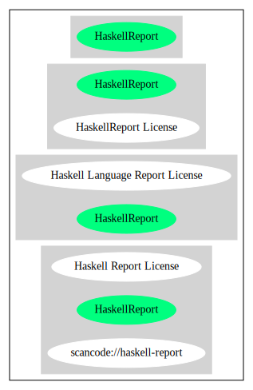

Key |
Value |
|---|---|
Fullname |
Haskell Language Report License |
Shortname |
HaskellReport |
Rating |
Unknown, probably Attention or Stop or No-Go |
Classification |
NoCopyleft |
Other Names:
scancode://haskell-report
Haskell Report License
Homepage: https://fedoraproject.org/wiki/Licensing/Haskell_Language_Report_License
SPDX: http://spdx.org/licenses/HaskellReport.json
The authors intend this Report to belong to the entire Haskell community, and
so we grant permission to copy and distribute it for any purpose, provided that
it is reproduced in its entirety, including this Notice. Modified versions of
this Report may also be copied and distributed for any purpose, provided that
the modified version is clearly presented as such, and that it does not claim
to be a definition of the Haskell 2010 Language.{
"__impliedNames": [
"HaskellReport",
"Haskell Language Report License",
"scancode://haskell-report",
"Haskell Report License"
],
"__impliedId": "HaskellReport",
"facts": {
"SPDX": {
"isSPDXLicenseDeprecated": false,
"spdxFullName": "Haskell Language Report License",
"spdxDetailsURL": "http://spdx.org/licenses/HaskellReport.json",
"_sourceURL": "https://spdx.org/licenses/HaskellReport.html",
"spdxLicIsOSIApproved": false,
"spdxSeeAlso": [
"https://fedoraproject.org/wiki/Licensing/Haskell_Language_Report_License"
],
"_implications": {
"__impliedNames": [
"HaskellReport",
"Haskell Language Report License"
],
"__impliedId": "HaskellReport",
"__isOsiApproved": false,
"__impliedURLs": [
[
"SPDX",
"http://spdx.org/licenses/HaskellReport.json"
],
[
null,
"https://fedoraproject.org/wiki/Licensing/Haskell_Language_Report_License"
]
]
},
"spdxLicenseId": "HaskellReport"
},
"Scancode": {
"otherUrls": null,
"homepageUrl": "https://fedoraproject.org/wiki/Licensing/Haskell_Language_Report_License",
"shortName": "Haskell Report License",
"textUrls": null,
"text": "The authors intend this Report to belong to the entire Haskell community, and\nso we grant permission to copy and distribute it for any purpose, provided that\nit is reproduced in its entirety, including this Notice. Modified versions of\nthis Report may also be copied and distributed for any purpose, provided that\nthe modified version is clearly presented as such, and that it does not claim\nto be a definition of the Haskell 2010 Language.",
"category": "Permissive",
"osiUrl": null,
"owner": "Simon Marlow",
"_sourceURL": "https://github.com/nexB/scancode-toolkit/blob/develop/src/licensedcode/data/licenses/haskell-report.yml",
"key": "haskell-report",
"name": "Haskell Language Report License",
"spdxId": "HaskellReport",
"_implications": {
"__impliedNames": [
"scancode://haskell-report",
"Haskell Report License",
"HaskellReport"
],
"__impliedId": "HaskellReport",
"__impliedCopyleft": [
[
"Scancode",
"NoCopyleft"
]
],
"__calculatedCopyleft": "NoCopyleft",
"__impliedText": "The authors intend this Report to belong to the entire Haskell community, and\nso we grant permission to copy and distribute it for any purpose, provided that\nit is reproduced in its entirety, including this Notice. Modified versions of\nthis Report may also be copied and distributed for any purpose, provided that\nthe modified version is clearly presented as such, and that it does not claim\nto be a definition of the Haskell 2010 Language.",
"__impliedURLs": [
[
"Homepage",
"https://fedoraproject.org/wiki/Licensing/Haskell_Language_Report_License"
]
]
}
}
},
"__impliedCopyleft": [
[
"Scancode",
"NoCopyleft"
]
],
"__calculatedCopyleft": "NoCopyleft",
"__isOsiApproved": false,
"__impliedText": "The authors intend this Report to belong to the entire Haskell community, and\nso we grant permission to copy and distribute it for any purpose, provided that\nit is reproduced in its entirety, including this Notice. Modified versions of\nthis Report may also be copied and distributed for any purpose, provided that\nthe modified version is clearly presented as such, and that it does not claim\nto be a definition of the Haskell 2010 Language.",
"__impliedURLs": [
[
"SPDX",
"http://spdx.org/licenses/HaskellReport.json"
],
[
null,
"https://fedoraproject.org/wiki/Licensing/Haskell_Language_Report_License"
],
[
"Homepage",
"https://fedoraproject.org/wiki/Licensing/Haskell_Language_Report_License"
]
]
}